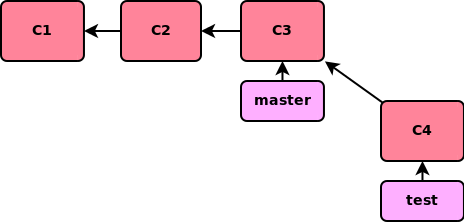

podstawy
podstawy
autor: Paweł Smoleński
|
SCM - ang. Source Code Manager
|
o czym powiem
- trochę teorii
- cechy dobrego SCM-u
- podział SCM-ów
- dlaczego git?
- trochę praktyki
- filozofia gita
- podstawowe komendy
- branch & merge
- zewnętrzne repozytoria
- cofanie zmian
- podsumowanie
- migracja z SVN-a
- literatura
- pytania
o czym nie powiem
- wnętrzności gita
- zagadnienia administracyjne
- hooki
- patchowanie
- modele zarządzania repozytoriami
cechy dobrego SCM-u
- bezpieczeństwo
- niezawodność
- szybkość
- elastyczność
podział SCM-ów (II)
-
delta storage
- lokalny
- scentralizowany
- rozproszony
|
-
DAG storage
- lokalny
- scentralizowany
-
rozproszony
|
dlaczego git?
- jest superszybki
- jest wydajny
- gwarantuje bezpieczeństwo danch
- jest łatwy w obsłudze
- umożliwia pracę offline
- ułatwia eksperymentowanie
- upraszcza zarządznie repozytorium
- świetny do projektów open source
gdzie można korzystać z gita?
- UNIX/Linux
- Mac/OSX
- Windows (mysysgit)
linia poleceń, dedykowane programy, wtyczki do IDE
kto korzysta z gita?
Ponad 3mln publicznych repozytoriów na github.com
-
git init
- tworzy nowe repozytorium
|
co siedzi w .git?
- config - konfiguracja repozytorium
- index
- objects - dane (pliki/commity/tagi)
- refs - odnośniki do danych
- logs - logi
- hooks - skrypty akcji
-
git config name value
- zmienia konfigurację repozytorium
|
przydatne opcje konfiguracyjne
- user.name - nazwa użytkownika
- user.email - email użytkownika
- color.ui - kolorowanie komunikatów
- core.editor - domyślny edytor
- alias.* - aliasy
opcje komendy
- --system - zapisuje konfigurację w
/etc/gitconfig
- --global - zapisuje konfigurację w
~/.gitconfig
- --list - wyświetla aktywną konfigurację
- --unset - usuwa opcję o zadanej nazwie
-
git status
- wyświetla aktualny stan repozytorium
|
-
git help polecenie
- wyświetla informacje o wskazanym poleceniu
|
-
git add
- kolejkuje pliki do scommitowania
|
opcje komendy
- --update - kolejkuje pliki, które znajdują się już w repo
-
git rm
- usuwa plik i kolejkuje do scommitowania
wygodniej używać git add -u
|
-
git commit
- commituje pliki
|
opcje komendy
- -m - dodaje komentarz
- -a - wywołuje
git add
-
git log
- wyświetla historię repozytorium
|
opcje komendy
- -n - wyświetla n ostatnich commitów
- --since - wyświetla commity od podanej daty
- --until - wyświetla commity do podanej daty
- --author - wyświetla commity danego autora
- --pretty - formatuje historię
graficzna historia
-
git diff
- pokazuje różnice między plikami
|
opcje komendy
- branch1 branch2 - różnice między branchami
- HEAD - różnice między working dir a repozytorium
- HEAD~n - różnice między working dir a repozytorium n commitów wstecz
- --name-status - różnice bez listowania kodu
-
git branch
- pokazuje branche/tworzy nowy branch
|
opcje komendy
- -d - usuwa wskazany branch
- --remotes - wyświetla zdalne branche
-
git checkout
- przełącza na wskazany branch
|
opcje komendy
- -b - wywołuje git branch
- --merge - automatyczny merge
tworzenie brancha |
|
|
modyfikacje w branchu |
|

|
fast forward merge |
przed |
|
|
po |
|
|
-
git clone
- kopiuje zdalne repozytorium na dysk
|
opcje komendy
- --branch - kopiuje wybrany branch
-
git remote
- zarządza zdalnymi repozytoriami
|
opcje komendy
- add - dodaje repo o wskazanym URL-u
- rm - usuwa repo o wskazanej nazwie
- rename - zmiana nazwy repo
- show - wyświetla informacje o wskazanym repo
- set-url - zmienia URL repo
-
git fetch
- pobiera zmiany ze zdalnego repo
|
opcje komendy
- --dry-run - podgląd zmian
-
git push
- wsyła lokalne (scommitowane) zmiany do zdalnego repo
|
-
git commit --amend
- poprawia ostatni commit
|
-
git reset HEAD filename
- usuwa plik z kolejki plików do scommitowania
|
-
git checkout -- filename
- cofa zmiany wprowadzone w pliku
|
-
git revert
- cofa wskazany commit
|
-
.gitignore
- zawiera nazwy (wzorce) plików, które nie powinny wchodzić w skład repo
|
-
git update-index --assume-unchanged
- ignorowanie zmian w plikach będących częścią repo
git update-index --no-assume-unchanged
|
migracja z SVN-a
- przekonwertowanie repozytorium
- transparentne korzystanie z gita